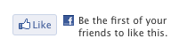

Facebook Button
You can easily add a Facebook 'Like' button to your site by adding a "Facebook Button" object.

When your visitors click on a Like or Recommend button, Facebook will pop up a login window to get your Facebook credentials unless you're already logged into Facebook.
To add a Facebook button:
- Choose "Facebook button" from the "Objects" menu in the toolbar
You can customize how your Facebook object looks in the Object Inspector.
Location
This is the page that you want your visitors to 'Like' or 'Recommend'. It can be the page that the Facebook object is located on or another page like a Facebook page or group; In that case, you would paste the URL of your facebook page into that field.
Appearance
You can choose the Layout
Colors:
- Light
- Dark - Looks better with a dark background or a dark design
Label:
- Like
- Recommend
This affects the verb in the button and also the tag that is posted to the visitor's Facebook profile.